Instruction Set for Strangers
Working in teams of two, research a public space and create a site-specific interface that connects strangers within this space.Part 1: Research, Observe, Document
We visited the Fort Greene farmers market on a fall day to observe the space and its interactions. We paid particular attention to interactions around the produce (touching, stacking, weighing, tasting), and to interactions around a prominent stone wall that lines the market's edge (climbing, looking over, leaning against, sitting upon).
Site: Fort Greene Park farmers market
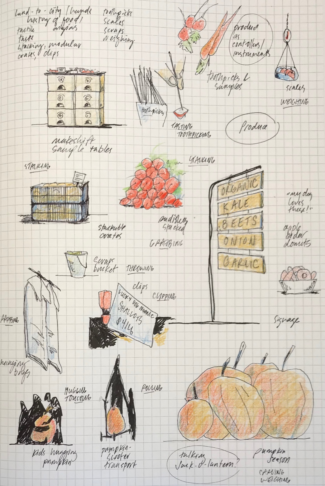Things people do with produce: stack, poke, taste, grab, weigh...
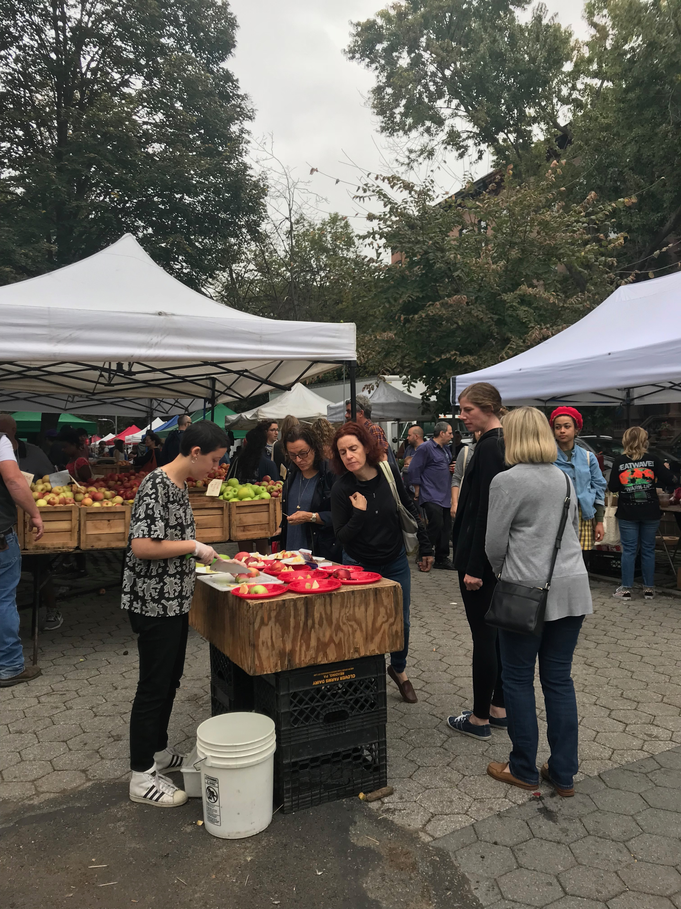Tasting stands are a popular, designed human-food/human-human interaction at markets.

Tasting stands are a popular, designed human-food/human-human interaction at markets.
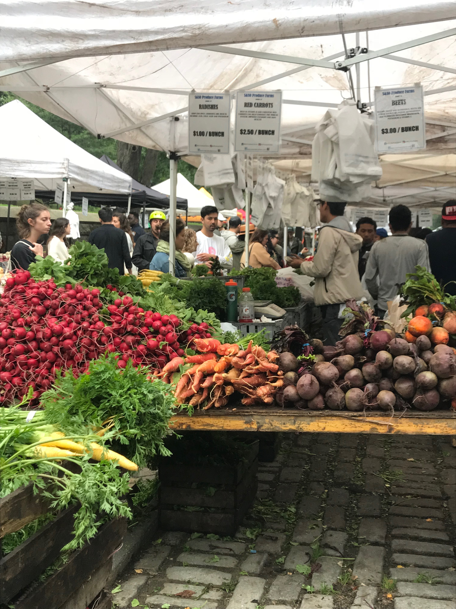Produce is stacked at markets to be efficient, attractive, and "grabbable".
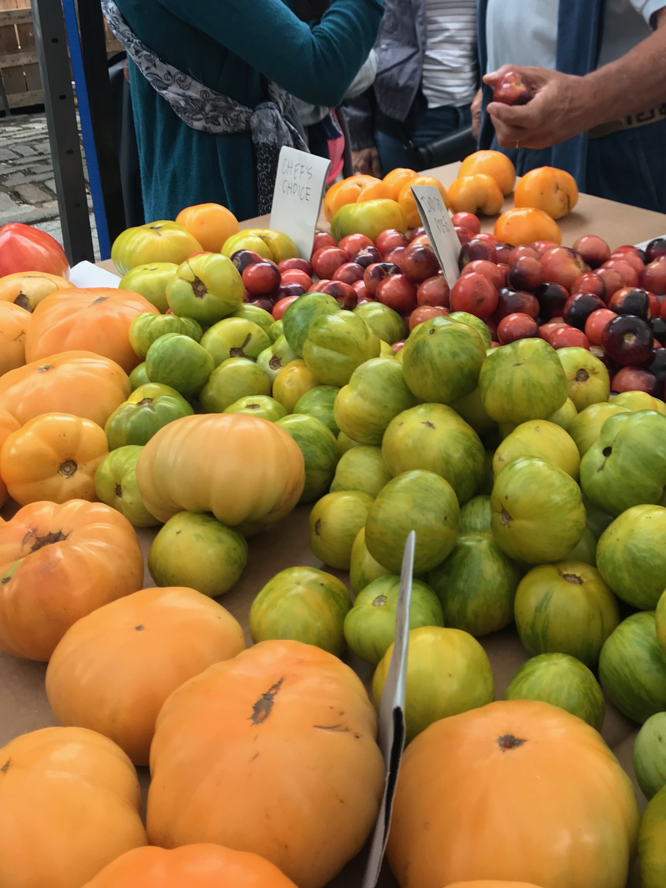Produce is touched, squeezed, moved around by shoppers.

Fort Greene Park market is organized linearly, with stands lining both sides of a busy walkway.
Tents mark each stand; bags and signs hang from above; produce-filled tabletops mark the divide between sellers and shoppers.
The market is organized along an old stone wall, offering some early ideas for wall-based interactions.
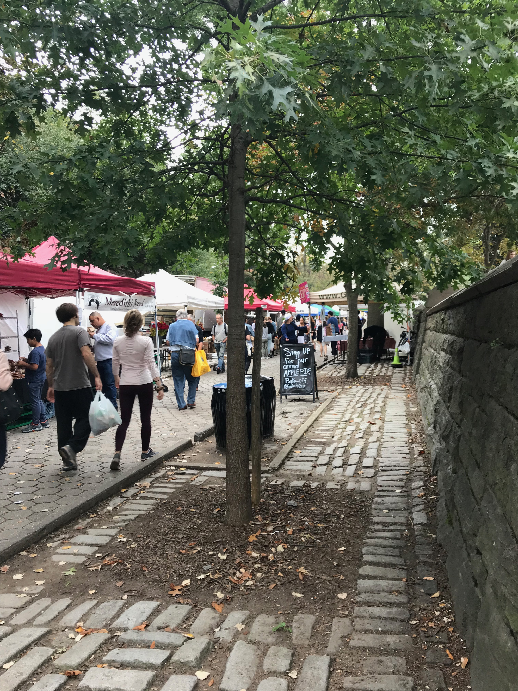Market organization along the stone wall.
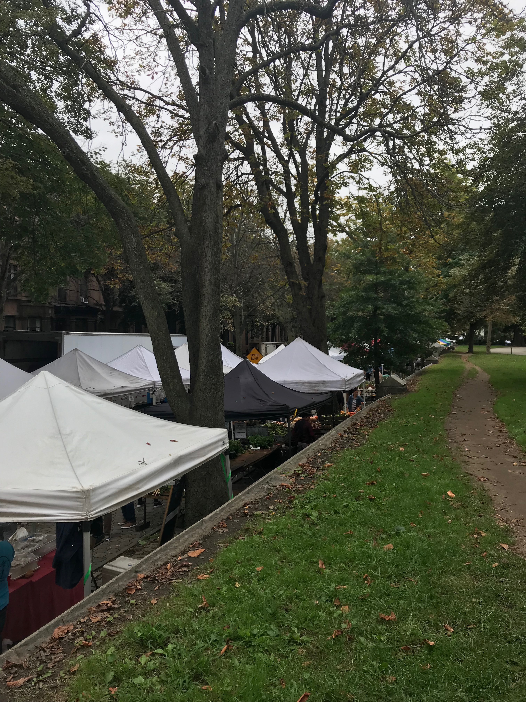A walkway above the wall offers views into the market, prompts us to think about the wall as an interface between people in the market and out of the market.

Early brainstorming around the market walkway's paving pattern.
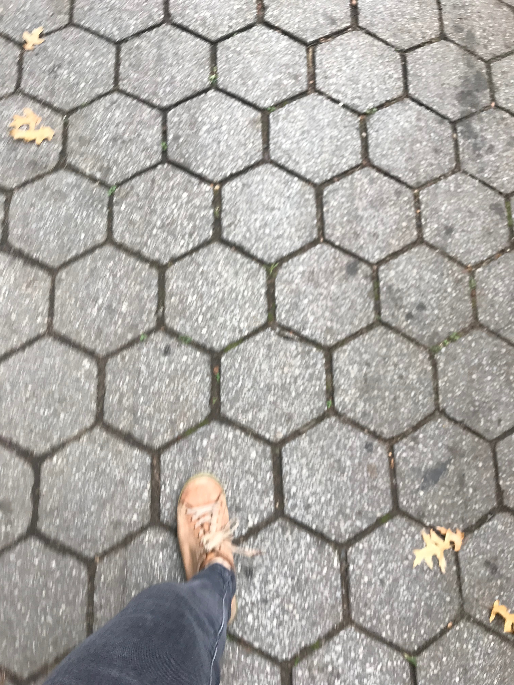The hexagon paving pattern is a common throughout NYC parks, and covers the entire market's walking surface.
Part 2: Create non-textual instruction sets for a public space
Embracing the fall season, and remembering kids hugging pumpkins in our earlier visit, we decide to play with this observed pumpkin interaction. What if a pumpkin didn't just have a carved face, but that face could talk with you?
// This p5.js code executes a "live-coded" conversation between
// a human and a pumpkin, created for the purposes of
// exploring what that interaction might feel like for a user.
let speech = new p5.Speech();
let counter = 0;
function setup() {
createCanvas(100, 100);
}
function mousePressed() {
speech.setVoice('Google US English');
if (counter == 0) {
speech.speak('Hello');
counter += 1;
} else if (counter == 1) {
speech.speak('How\'s it going?');
counter += 1;
} else if (counter == 2) {
speech.speak('Looks like you\'re enjoying the market.');
counter += 1;
} else {
counter = 0;
}
}
Part 3: Prototyping, Testing, Iterating, Documenting
We set up a small stand of interactive jack-o-lanterns to the market. The pumpkins' had two coded affordances: they could play a variety of music or they could say a variety of greetings. In each case, the user had to lift the lid to begin the interaction.
Between iterations, we played with number of pumpkins and loction of pumpkins. In each case, we found our signifiers to be either not there at all or too weak to overcome an apparent "jack-o-lanterns aren't for touching" intertia. In future iterations, it's clear we needed to focus more on creating opportunities to begin the interaction. Once past this barrier, we observed that the users stayed with the interaction.

Off-site prototype: How will the pumpkin's side of the interaction be triggered?

Off-site prototype: How will the pumpkin's side of the interaction be triggered? How does the pumpkin's response feel to the human?
Onsite (1st iteration): one pumpkin is up and working. When the lid is lifted, music plays from a playlist of Halloween songs.
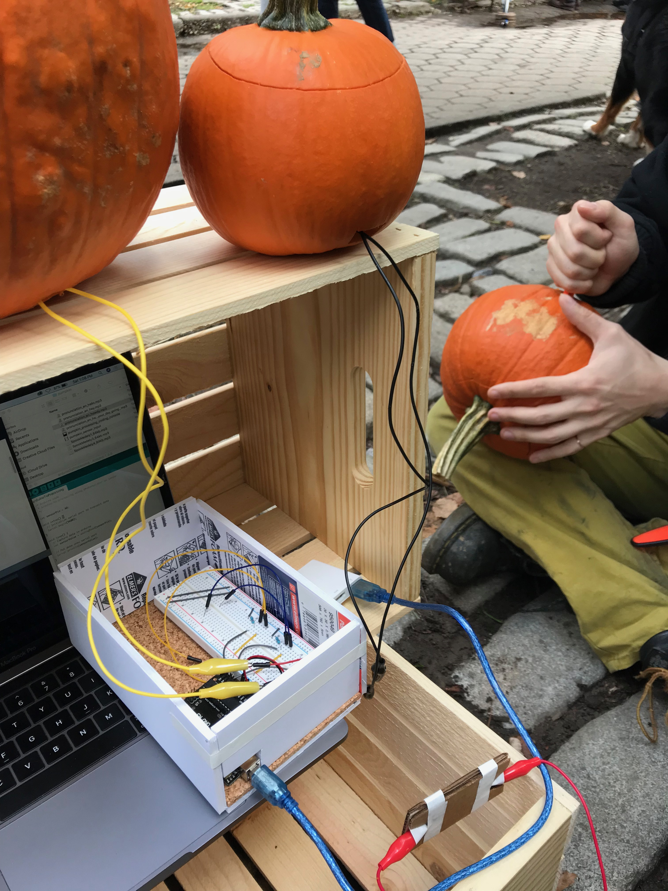Onsite (2nd iteration): Setting up multiple pumpkins. Now when a lid is lifted, each pumpkin speaks its own greeting: "hey", "howdy", "hello".
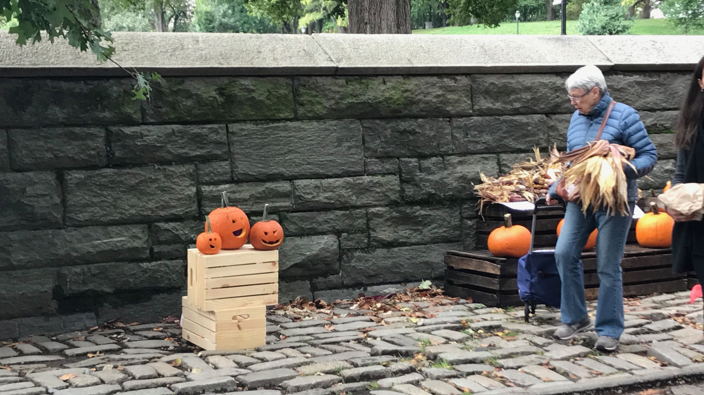Looking from afar

Looking up close
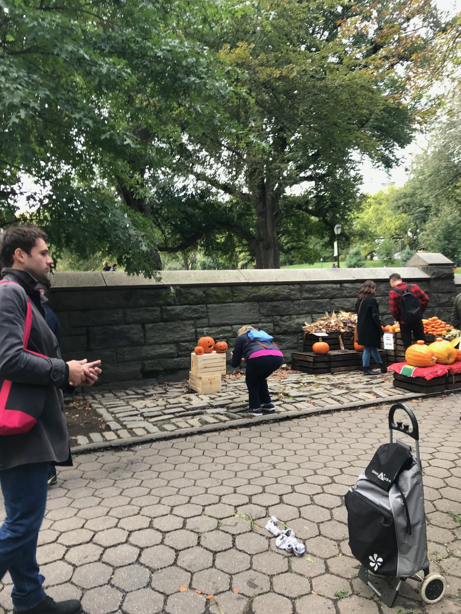Taking pictures
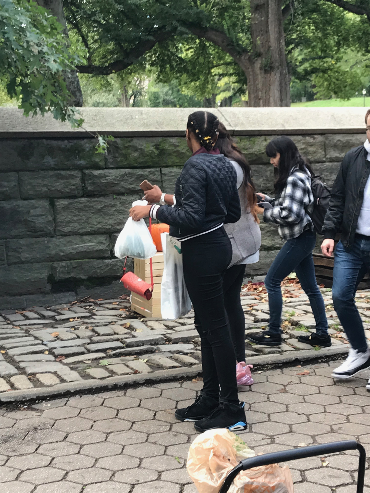Taking pictures
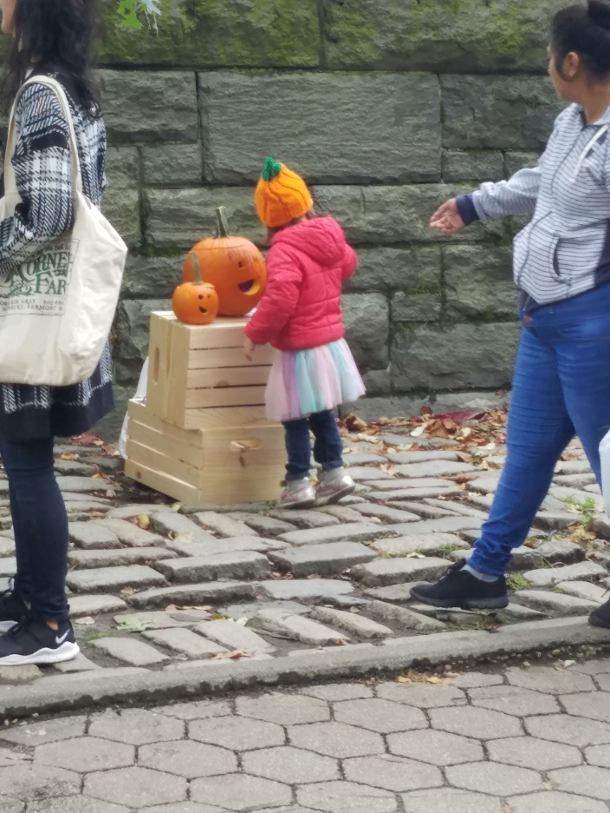Intended interaction: removing the lid

Intended interaction: removing the lid